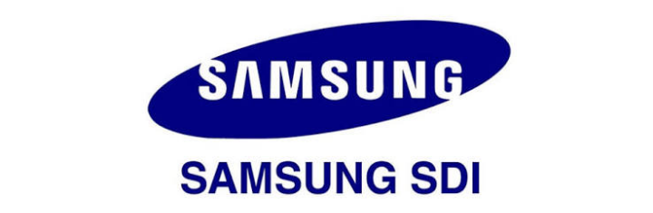

OPEN DART • FINANCIAL INTELLIGENCE
삼성SDI 재무 대시보드
사업·반기·분기 보고서 기반 핵심 수치와 재무비율

데이터 불러오는 중
매출액 · 영업이익 추이
Annual 기준 · 금액 단위는 원. 최근 연도부터 자동 갱신됩니다.
최근 Annual 수익성
매출총이익률 · 영업이익률 · 순이익률
상세 재무 데이터
단위: 원. 비율은 %. 반기·분기 손익계정은 DART가 제공하는 해당 보고기간/누적 기준을 사용합니다. 데이터 출처: OpenDART.
국내 Peer firms
삼성SDI의 배터리·전자재료 사업과의 사업영역 중첩을 기준으로 정리한 비교기업입니다. Peer 선정은 정보 제공용이며 자동 투자판단이나 순위를 제공하지 않습니다.
| 기업 | 주요 비교 영역 | 비교 시 유의사항 |
|---|---|---|
| LG에너지솔루션 ↗ | EV·ESS 배터리 | 국내 대형 배터리 셀 제조사 |
| SK이노베이션 / SK온 ↗ | EV·ESS 배터리 | 배터리 사업 비교 시 SK온의 사업 범위를 별도로 고려 |
| LG화학 ↗ | 배터리 소재·화학 | 배터리 셀보다는 소재 및 화학 밸류체인 비교에 적합 |
| 포스코퓨처엠 ↗ | 양극재·음극재 | 배터리 소재 단계의 비교기업 |
| 에코프로비엠 ↗ | 양극재 | 소재 사업 중심이라 셀 제조사와 직접 비교 시 사업구조 차이 고려 |
| 엘앤에프 ↗ | 양극재 | 양극재 사업 중심의 소재 비교기업 |